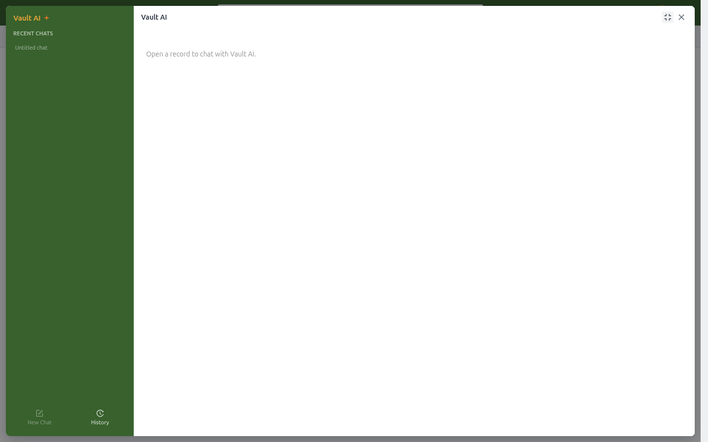
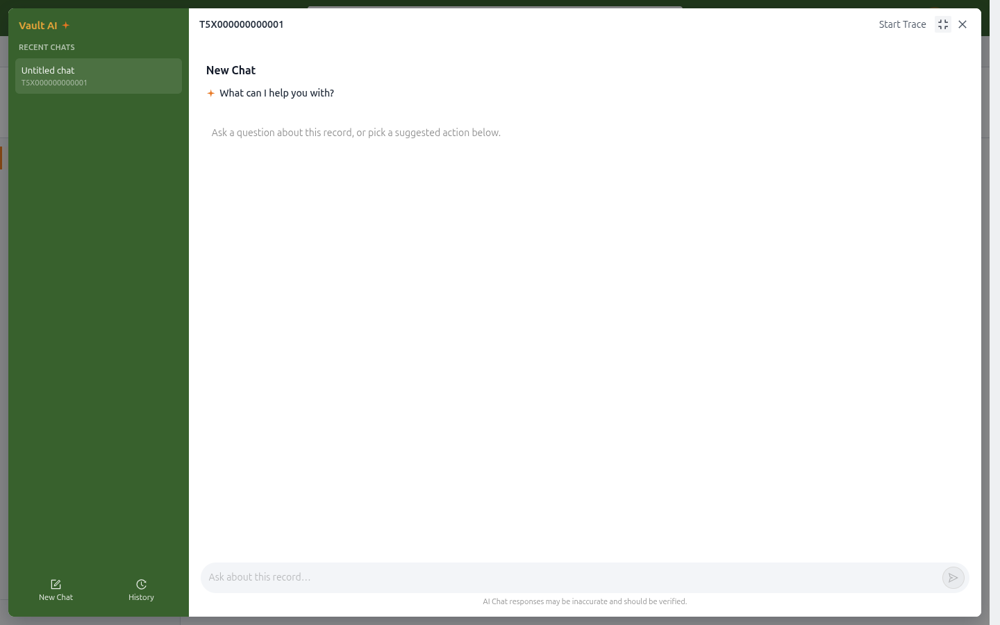
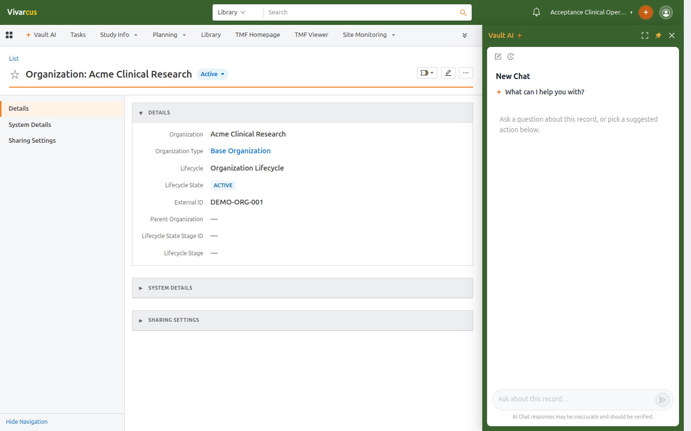

Opening Record Context
Open any record detail page (study, document, organization, etc.) and click the Vault AI button in the top-right header. The floating panel recognizes the current record and switches to its dedicated conversation; the input placeholder becomes "Ask about this record…".
With no record open, the panel instead prompts "Open a record to chat with Vault AI".

*No record open: the panel asks you to open one first.*
Quick Actions
The record-context panel offers quick actions:
| Action | What it does |
|---|---|
| Ask | Free-form questions about the current record |
| Summarize Record | One-click structured summary: key fields, milestones, document requirements, and to-dos |
| Translate Record | Translate record content into another language |
Clicking an action sends the request immediately. On a study record, for example, Summarize Record produces a summary with the study number, phase, status, milestones, EDL requirements, and open tasks.

*The chat panel on an organization record, ready for questions about it.*
Start Trace
The Start Trace button at the top of the panel keeps a dedicated conversation for the current record:
- The record's conversation appears in the panel's Recent Chats list, named after the record ID.
- Returning to the record restores its conversation automatically (when auto-switch is enabled by an administrator).
- Keep asking in the panel at any time; questions stay scoped to that record.
Docking the Panel
Click Panel at the top of the panel to dock it to the right side of the page: browse the record fields on the left while the conversation stays open on the right. Once docked, you can:
- Fullscreen: expand to a full-page chat;
- Floating: return to the centered popup mode;
- Close: dismiss the panel.

*Docked mode: browse the record on the left, keep chatting on the right.*
Tips
- Conversations are independent per record; a conversation on a record is shared with other users who have access to it.
- For cross-record questions (e.g. "How many studies are in this vault?"), use the Vault AI tab — see Chatting with Vault AI.